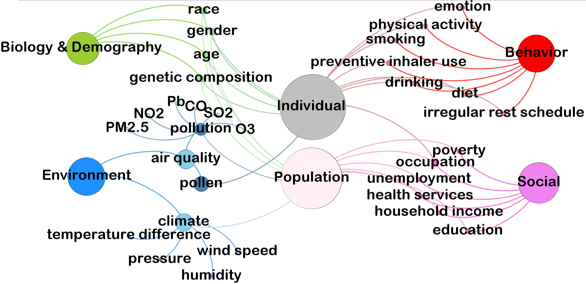
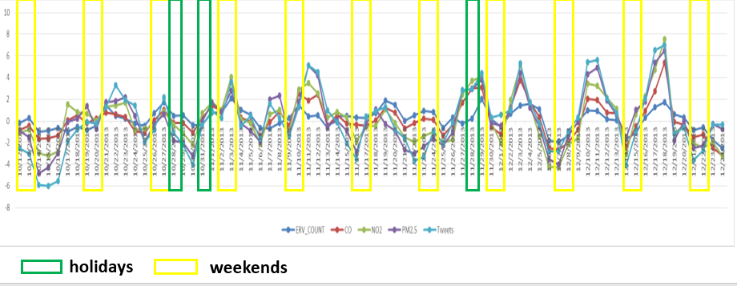
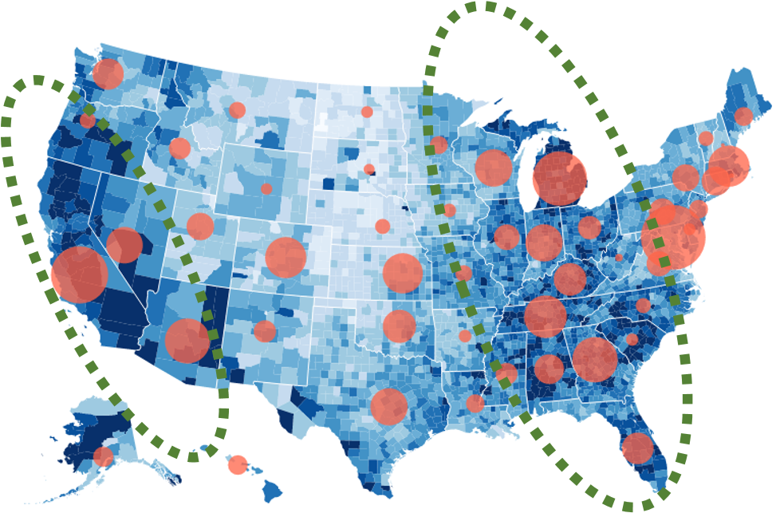
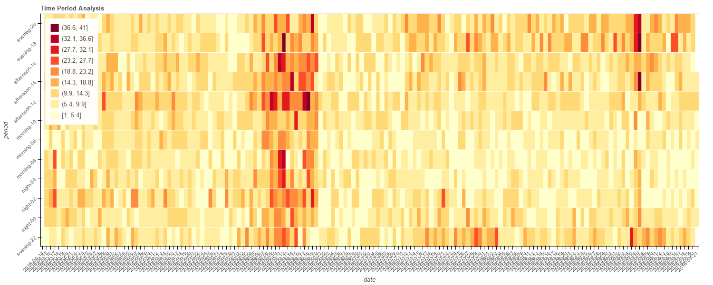
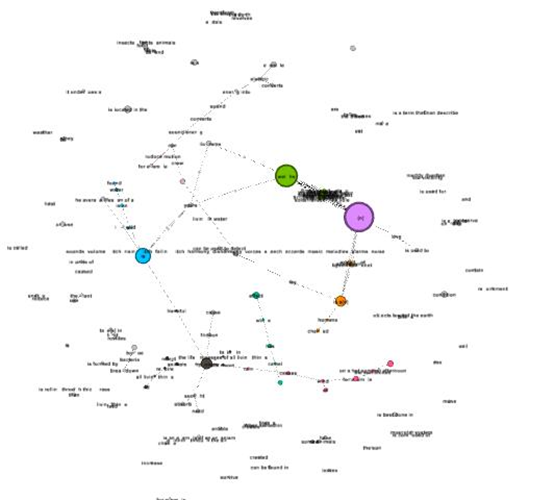

Research Interests
- Machine Learning
- Text Mining
- Natural Language Processing
- Social Network Analysis
- Healthcare
Sep 2013 – Present
 Chronic diseases are the leading causes for decreasing quality of life, hospitalization, disability and death in the United States and all over the world. For a long time, researchers have been seeking ways that promote management and prevention of chronic conditions, to save time, money and energy; to support evidence-based health care decisions and to customize individual patients' disease management plans. Healthcare related Big Data analytical tools have the potential to leverage data from large-scale longitudinal sources for population level chronic disease prevention, as well as to capture trends and propose models for individual level proactive self-management. Nonetheless, the exact role of Big Data analytical tools in the area of chronic disease management has not been fully studied. To take full advantage of Big Data, there is an urgent need to enrich our understanding of Big Data and use it to provide insights for researchers, patients and health providers. By choosing asthma, one of the most serious chronic diseases in the US, as a research case, this dissertation addresses three research questions:
 The dissertation comprises of four essays. The first essay seeks to provide an efficient framework to extract signals from social media and make social media data available to answer these questions. The second essay focuses on building a robust Big Data based population level surveillance model that enables health providers to respond to chronic conditions, like asthma, in real time. In the third essay, a framework for comprehensive asthma risk factors analysis is proposed. In the fourth essay I examine behaviors for alleviating chronic disease risks such as smoking. Models, frameworks, and design principles proposed in these essays advance not only health-care research, but also more broadly contribute to design science and predictive modeling research domains.
Nov 2015 – Present
 Electronic cigarettes (e-cig) usage has increased exponentially over the last few years and are perceived to be safer alternative to cigarettes use. In order to understand the public health impact of e-cig, a better understanding of population-wise use patterns, perceptions regarding the use and abuse liability of e-cig should be developed. However traditional survey is not adequate to get such information. The research objective of this study is to explore using social media data to identify key conversations, trends, and patterns about the usage of e-cig by using natural language processing, word embedding, topic modeling, content and sentiment analysis, and social network analysis. [Read More]
Feb 2016 – Present
 This is a research project for developing a strategy and infrastructure to use social media to monitor topics for the purpose of public health surveillance in Pima County, Arizona. These include influenza, vector borne disease, and heat related illness. The research will in collaboration with the Pima County Health Department and it will develop and implement strategies to accomplish the following [Read More]:
Mar 2016 – May 2016
 Nowadays, one critical but challenging problem in AI is to demonstrate the ability to consistently understand and correctly answer general questions about the world.
This project is to extract facts from various sources and processing them into a structured knowledge base. When taking an exam, questions are parsed and processed along with any accompanying diagrams to determine a strategy for answering. The proposed model then uses information retrieval, word-embedding, and network inference methods to select a final answer. [Read More]